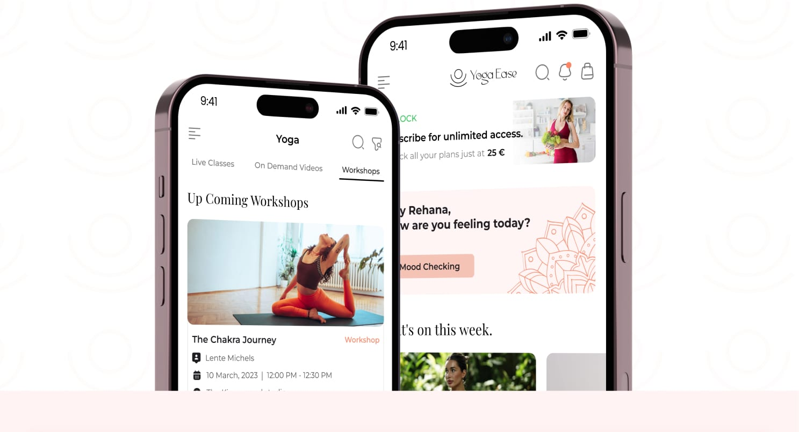
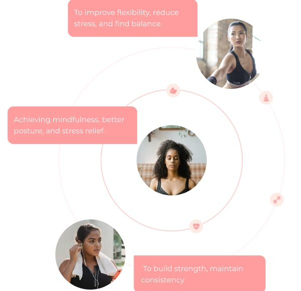
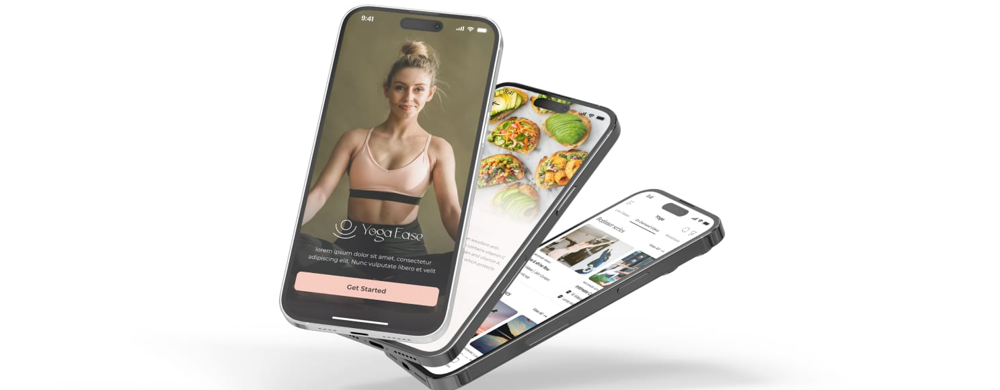
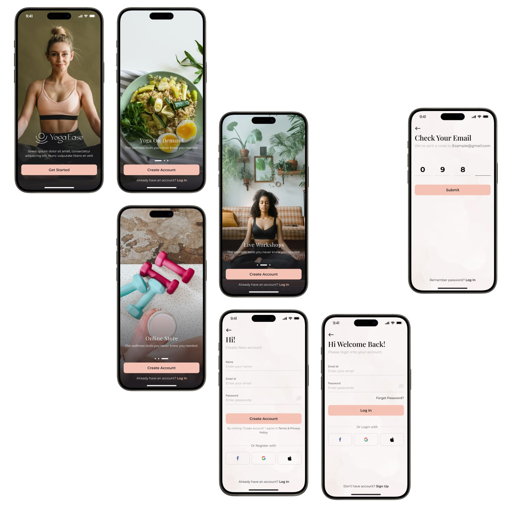

Insight 01
Interviews
Diverse motivations.
From physical fitness to mental well-being — people practise for different reasons.
Design implication
The app has to flex: a wellness dashboard that tracks yoga, sleep, mood, water and steps together.
Wellness · UX/UI case study
Experience the ultimate yoga and wellness journey in one app. Discover how we've created a holistic haven for yoga enthusiasts, merging practice, and nutrition.

01 — Project overview
An all-in-one yoga and wellness app that combines guided sessions, mindfulness, diet-based recipes and an integrated store — so the whole routine lives in one place instead of five.

02 — The challenge
From eight user interviews, four pain points came up again and again.
01
Little room for long sessions, and no easy way to fit practice around work.
02
Hard to track a routine, and almost no meditation-focused content.
03
Yoga in one app, recipes in another, nothing tying them together.
04
Beginners felt overwhelmed by complex poses and thin guidance.
03 — Research & insights
Eight interviews, grouped by affinity mapping into a clear set of themes.
Insight 01
Interviews
From physical fitness to mental well-being — people practise for different reasons.
Design implication
The app has to flex: a wellness dashboard that tracks yoga, sleep, mood, water and steps together.
Insight 02
Affinity mapping
Users want personalization and a curated selection, not a bigger catalogue.
Design implication
A beginner path — graded series and a curated library so a first session is easy to find.
Insight 03
Affinity mapping
Combining the two is a genuine selling point — and community and mindfulness are what keep people coming back.
Design implication
Recipes sit in the tab bar next to the practice, not buried in a submenu.

04 — Design process
Four stages, roughly 80 hours from first interview to handoff.
01
Client goals, idea validation and eight user interviews.
02
Affinity mapping, a persona, and one site map across five areas.
03
Wireframes into 40+ final screens on a calm, consistent design system.
04
Prototyping, review and handoff.
Interviews, affinity and empathy mapping, persona.
One site map across mindfulness, yoga, home, shop and recipes.
Design system, 40+ screens, prototyping and handoff.
End-to-end product design, from research to a handoff-ready UI kit.
05 — Final solution
Five connected areas behind a single account — each answering one of the pain points directly.

01
Yoga, sleep, mood, water and steps tracked in one place, with a learning list.

02
Yoga on demand, live workshops and the store — then sign-up, email verification and log in.

06 — The outcome
Screens designed across the full journey.
Hours from first interview to handoff.
Users interviewed in qualitative research.
Connected product areas under one IA.
Crafting wellness together
What was five apps to juggle ended as one flow behind a single account.
Delivered to handoff, so the honest measure is the shipped system rather than adoption figures — no post-launch analytics were collected, and none are claimed.
As an Associate UI/UX Designer I worked under the guidance of an experienced Team Lead to bring the app to life.
Interested in the thinking behind this project? I'd be glad to walk through it.